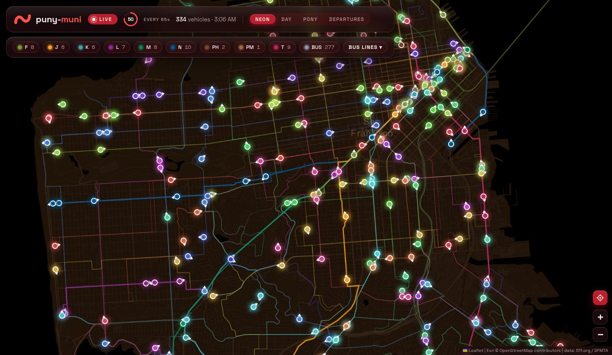

ROUNDING UP THE FLEET…

Every Muni vehicle in San Francisco, live — Metro trains, buses, historic streetcars and cable cars — plus a split-flap departures board for any stop.
Muni's real-time feed (511.org) needs a private API key, so there's no hosted version — the tracker runs on your machine, with a tiny server and a free key from 511.org:
# needs Node 18+, no dependencies git clone https://github.com/danielluzhu/puny-muni.git cd puny-muni TRANSIT_511_API_KEY=yourkey npm start # → http://localhost:8643